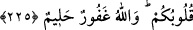

bozmak husûsunda Allah’dan korkarız.” demeyiniz. Çünkü iyilik, takvâ ve ıslah gibi
hayırlı işleri yapmama konusunda edilen yemîni bozmak, bozmamaktan daha hayırlıdır.
Rasûlullah (s.a.) buyurmuştur ki: “Bir şey hakkında yemin edip başkasını daha hayırlı
gören kişi yemîninin keffâretini versin ve daha hayırlı gördüğü şeyi yapsın.”[162]
Yemîni bozmadan önce keffâretini ödemek câiz olmadığı gibi bozduktan sonra keffâret
vermek, ittifakla vâcibtir. İshâk’a göre de yemîni bozmadan önce, sırf yemin sebebiyle
keffâret ödemek câiz değildir.
eş-Şir’a’da gelmiştir ki: Kişinin, doğru veya yalan yemînle ticâret eşyâsına sürüm
kazandırmaya çalışması doğru değildir. Çünkü böyle birisi şâyed yalancı ise yemîni,
büyük günahlardan biri olan yemin-i gamûstur. Yok eğer doğru ise, Allah’ı, yemînine
araç yapmış ve dolayısıyla hatâ etmiştir. Çünkü dünyâ malı, zarûret olmaksızın Allah
adıyla tervice lâyık olmayacak kadar değersizdir. Küçük veya büyük, az veya çok her
şeyde yemin eden kişinin, dili yemin etmeye alışır. Fakat gönlünde yemînin bir yeri, bir
itibarı kalmaz. Dolayısıyla bu kişinin yalan yere yemin etmesinden de emin olunmaz.
Böylece yemînden maksûd olan esas gâyeye halel gelmiş olur. Haberde gelmiştir ki:
“Sürekli olarak “Vallahi bu böyledir vallahi bu böyle değildir” diye yemin eden
tüccarlara yazıklar olsun.”[163]
Bustânü’l-Ârifin adlı eserde şöyle denilmiştir: Kişinin, ticâret eşyâsı satarken
Peygamber Efendimiz (s.a.)’e salât ü selâm getirip: “Allah, Hz. Muhammed’e salât ü
selâm etsin, şu mal ne kadar da güzel” demesi de hiç hoş değildir.
Hz. Peygamber (a.s.) buyurmuştur ki: “Tâcirler, fâcirlerin tâ kendileridir.” Denildi
ki: “Ya Rasûlallah, niçin öyle söylüyorsun? Allah alışverişi helâl kılmadı mı?”
Buyurdular ki: “Ancak onlar yemin edip günah kazanırlar ve çokça yalan
söylerler.”[164]
“Vallahi, Allah şöyle şöyle yapacak” şeklinde yemin etmek doğru değildir. Fakat bir
Allah dostu, zikredilen şekilde yemin ederse, kerâmet olarak Allah onun yeminini yerine
getirir ve yalancı çıkarmaz. Ebû Hafs Haddâd bir gün yolda yürüyordu. O sırada
dehşete düşmüş, şaşkın halde bir köylü gördü. Ebû Hafs ona: “Sana ne oldu?” dedi.
Köylü: “Merkebimi kaybettim. Başka binek almaya da gücüm yok.” dedi. Ebû Hafs “Ey
Allah’ım, izzetine yemin ederim ki, bu adamın bineğini geri iâde etmedikçe bir adım
atmam” dedi. Derhal o vakit merkeb zuhûr ediverdi. Bu kıssa, Şerhu’l-Meşârik adlı
eserde zikredilmiştir.
225. Allah sizi kasıtsız yemînlerinizden sorumlu tutmaz. Lâkin kasıtlı yaptığınız
yemînlerinizden dolayı sizi sorumlu tutar. Allah gafûrdur, halîmdir.